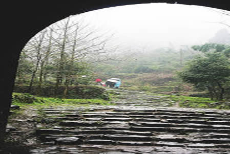
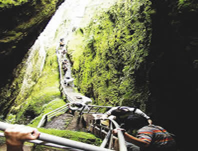

三十年间七至浙江，五过衢州
衢州地处浙江的西大门，古代江浙一带入闽赣则是必经之路，因此家居江苏江阴的徐霞客“三次游闽”和最后一次“西南之行”经过衢州已是定局。徐霞客究竟几过衢州？有说四次，有说六次，从《徐霞客游记》看，徐霞客到衢州游历应该是不少于五次。
据地质学家丁文江先生的《徐霞客先生年谱》，万历四十四年(公元1616年)，“先生于正月二十六日至休宁，盖自浙入皖”，“二月十二日至二十日无日记，盖在自浙入闵道中。”浙江省徐霞客研究会执行会长吴尧民认为丁文江的这一推断是正确的，他在《徐霞客在浙江中》写到：“丁氏的这一分析，我认为是正确的。万历四十四年，由浙江入闽并非推测，而是由《日记》可以考证的。”衢州日报原副总编辑庄月江也曾提到：“从江阴到常山、衢州，必经衢州。去休宁，上黄山，衢州也是必经之地。”所以，这样分析起来，这应该是徐霞客第一次经过衢州。
崇祯元年(1628年)，徐霞客经江山去福建、两广旅游，再次经过衢州；崇祯六年(公元1630年)，徐霞客从江阴老家出发，在入闽途中，第三次来到了衢州；第四次是崇祯三年(公元1630年)徐霞客路过衢州，他应在福建漳州做官的叔父之邀，冒暑南行，经龙游，乘船过樟树潭、江山，经廿八都，进入福建浦城。
徐霞客第五次经过衢州是崇祯九年(1636)十月十三日至十六日，他坐船经湖镇、龙游，到衢城、再从常山入江西。
从《徐霞客游记》看，徐霞客到衢州游历不少于五次，足迹遍及衢江、柯城、龙游、江山、常山五个县(市)，并留下了2000多字的游记。“
与江郎为面，如故友再晤”徐霞客曾多次游历江郎山
徐霞客在《游九鲤湖日记》中曾这样写道：“二十三日，始过江山之青湖。山渐合，东支多危峰峭嶂，西伏不起。悬望东支尽处，其南一峰特耸，摩云插天，势欲飞动。问之，即江郎山也。望而趋，二十里，过石门街。渐趋渐近，忽裂而为二，转而为三；已复半岐其首，根直剖下；迫之，则又上锐下敛，若断而复连者，移步换形，与云同幻矣！”这里，徐霞客生动地刻画了变化多姿的江郎山形象，且文字洗练精辟。徐霞客甚至认为雁荡山、黄山、仙都山都不如江郎山，“特出众山之上，自为变幻，而各尽其奇也。”这是徐霞客第一次游江郎山并记录了200多字的游记。
1628年，徐霞客再次与江郎山谋面，并称“与江郎为面，如故友再晤”，可见徐霞客对江郎山的无限深情。此后，他又游览了仙霞关，由仙霞岭进入福建境内。
1630年，徐霞客43岁，这次他重点游览了位于浙闽边际的浮盖山。时年八月初一，徐霞客冒雨来到江郎山脚下，有“望江浪片石，咫尺不可见”，因为下雨这次可以说是三游江郎山而未果。从第二天开始他经廿八都游览了浮盖山，并为此留下了1500字的游记，其间详细描述了当时登山的情景以及双笋石人、五峰环坪等景点。从他的描述上看，浮盖山的景色非常迷人，对此山可谓情有独钟。1636年，徐霞客最后一次进入衢州境内，对衢州的特产橘子作了描述，由衢州常山进入江西玉山。
“游圣”让衢州古城更具旅游价值

徐霞客三次游历江郎山，有后人为了纪念他还专门设立了“霞客亭”，徐霞客很多诗文被刻在景点的显要位置，供游客鉴赏。在浮盖山，1500多字的记录显示出了当年徐霞客对此景点的仰慕和喜爱，也被后人称为佳话。
最让人惊喜的是，徐霞客还曾以“两岸橘绿枫丹，令人应接不暇……橘奴千树，筐篚满家，市橘之舟鳞次河下。”描绘了衢州城郊万亩橘海的壮阔景象。
徐霞客被旅游业内人尊为“游圣”。“游圣”的五次衢州行，几乎走遍了衢州大大小小的景点——境内的仙霞古道徐霞客走了3次，然而这条古道上，更是分布着衢州柯城万亩橘海、江山江郎山、仙霞关、廿八都古镇、浮盖山等，此外徐霞客还曾沿衢江、常山港、江山港、青湖，2次乘船经过了龙游、衢江、柯城、常山境内。
到了今天，徐霞客当年走的路，便成了今天衢州旅游主推线路的重要参考。
以当年徐霞客三走“江郎山—仙霞关—廿八都—浮盖山”这条主线为标准，我市目前已开辟出了多条主推旅游线路，如龙游石窟—孔庙—江郎山线路；烂柯山—江郎山—仙霞关—浮盖山；江郎山—仙霞关—江西婺源等精彩的线路，这也在一定程度上重走了当年徐霞客走过的衢州之路。(罗东哲 龚晓峰/文 周芸/摄)